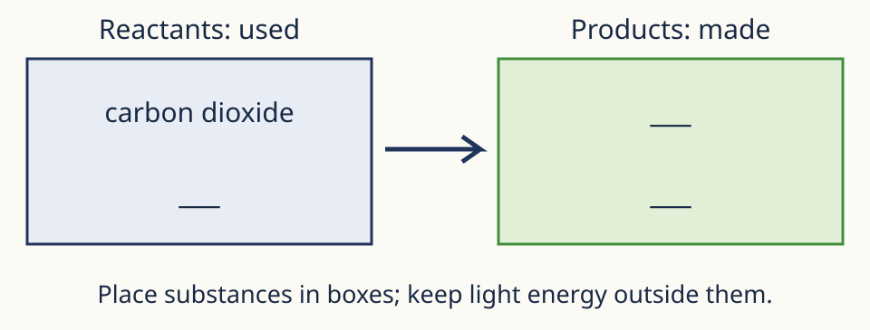
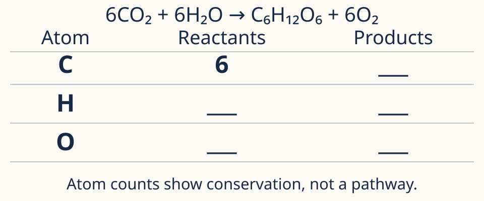
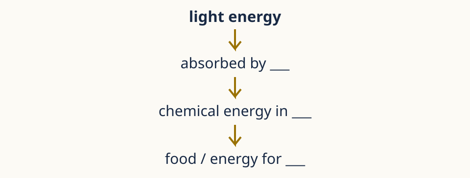

Choose support from your barrier
Attempt first. Use matched help, then close it for a different check.
Matter

Complete the used/made boxes. Keep light outside: it is energy, not a substance.
Support task: model answer & criteria
Model response carbon dioxide + water → glucose + oxygen. Light supplies energy, not atoms.
Success criteria Correct reactants/products. · Light outside substance boxes.
Equation

Copy a blank atom table. Given reactant C=6, complete the missing totals. Circle coefficients separately from subscripts.
Support task: model answer & criteria
Model response Both sides contain C6, H12 and O18. Atoms are conserved/rearranged; light does not supply atoms.
Success criteria All six totals correct. · Explains equal counts as conservation.
Energy

Complete the chain. Then explain why light belongs outside the substance boxes.
Support task: model answer & criteria
Model response Light energy → absorbed by chlorophyll → chemical energy in glucose → food/energy for plant and animals that eat it. Light is energy, not atoms.
Success criteria Three scientifically correct links. · Distinguishes energy from matter.
Close the scaffold first. Show your explanation before checking.
Matter · Different recheck
S1R. A water plant produces glucose. Name the carbon-containing input and gas product; explain what a lamp contributes.
Work without the scaffold. Show your explanation before opening the review.
Recheck: model answer & criteria
Model response Carbon dioxide input; oxygen product; lamp supplies light energy rather than atoms.
Success criteria Carbon dioxide, oxygen and energy correctly matched.
Equation · Different recheck
S2R. Without the table, count O atoms in 2CO₂ + 2H₂O. Does 2H₂O mean the same substance as H₂O₂?
Work without the scaffold. Show your explanation before opening the review.
Recheck: model answer & criteria
Model response 4 + 2 = 6 O atoms. No: 2H₂O means two water molecules; H₂O₂ is a different substance.
Success criteria Correct multiplication and 6 total. · Coefficient versus formula identity distinct.
Energy · Different recheck
S3R. A green crop is eaten by a rabbit. Explain the energy route from light to rabbit without saying light becomes matter.
Work without the scaffold. Show your explanation before opening the review.
Recheck: model answer & criteria
Model response Chlorophyll absorbs light energy; it becomes chemical energy in glucose/plant food; eating transfers that chemical energy to the rabbit.
Success criteria Absorption, chemical store and eating link. · Energy never described as glucose atoms.